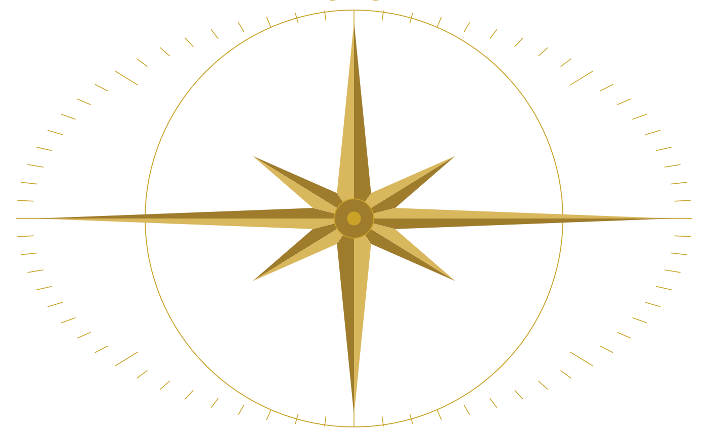
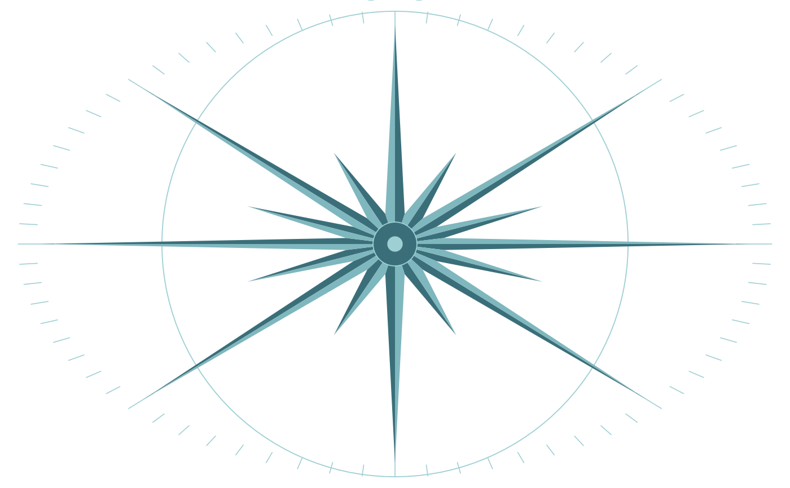

compass_rose_grob.RdBuilds a compass rose entirely from geometry (no imported assets), returned
as a grid grob so it composes into base grid, ggplot2 (annotation_custom),
gt, and Quarto. Part of the delightkitr print ornaments family.
Number of star points (>= 4). Even values alternate long cardinal / short intercardinal rays.
Overall diameter in npc units (0-1) within its viewport.
Length of intercardinal rays relative to cardinal rays
(even points only). Use 1 for a uniform star.
Notch radius as a fraction of tip radius; smaller = slimmer rays.
Rotation in degrees. 90 puts a point straight up (North).
Length-2 vector c(light, dark) for the two-tone shading.
Colour for the tick ring, hub outline, and north marker.
Draw the degree tick ring?
Number of ticks around the ring. Every
round(n_ticks / 8)-th tick is drawn long; with fewer
than 12 ticks all ticks are long.
Draw the north trefoil marker?
Centre of the rose in npc units.
Standard grob arguments.
A gTree grob.
grid::grid.newpage(); grid::grid.draw(compass_rose_grob())

grid::grid.newpage()
grid::grid.draw(compass_rose_grob(points = 16, fill = c("#7FB7BE", "#3A6F7A"),
ink = "#9ECFD4"))
